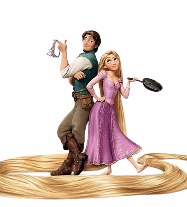

Sinopse
Flynn Rider, o bandido mais procurado do reino, se esconde em uma torre e acaba prisioneiro de Rapunzel, uma jovem com longos cabelos dourados e mágicos.
Trancada há anos, Rapunzel deseja liberdade e, ao fazer um acordo com Flynn, os dois embarcam em uma emocionante aventura juntos.
Trailer
Curiosidade
- O Conto Original: Baseada no conto dos Irmãos Grimm, publicado em 1812
- Cabelos Mágicos: Seus cabelos têm 21 metros e propriedades curativas
- Companheiro: Pascal, o camaleão, é um amigo leal e expressivo
- Música Famosa: "I See the Light" foi indicada ao Oscar de Melhor Canção Original
- Inovação Visual: "Enrolados" foi o primeiro filme de animação da Disney em HD.
Elenco
Donna Murphy
Mãe Gothel - Mãe Gothel é a antagonista de "Enrolados", que sequestra Rapunzel para explorar seus cabelos mágicos e mantê-la prisioneira em sua torre
Mandy Moore
Rapunzel - Rapunzel é uma jovem com cabelos mágicos, prisioneira em uma torre, que deseja liberdade e aventura
Zachary Levi
Flynn Rider- Flynn Rider é um bandido carismático que se une a Rapunzel em uma aventura para buscar liberdade e autodescoberta